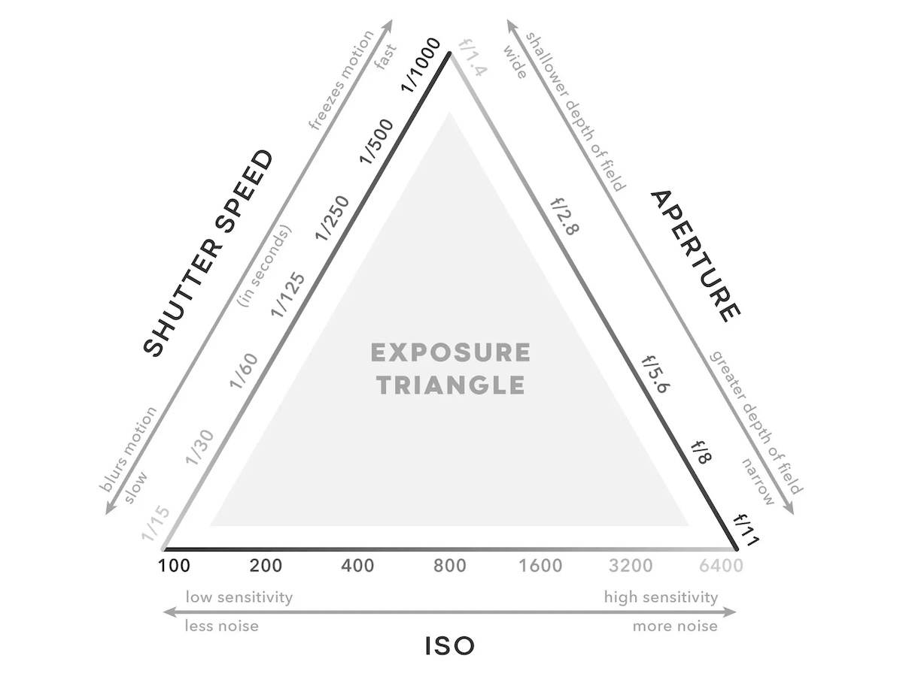

Fotoğrafçılıkta Pozlama Üçgeni: Temel Bir Kılavuz
Pozlama üçgeni, fotoğrafçılığın en temel ve vazgeçilmez kavramlarından biridir. Işığın doğru bir şekilde algılanması ve fotoğrafın istenilen parlaklıkta olması için üç temel unsura odaklanır: diyafram, enstantane hızı ve ISO. Bu üç faktör birlikte, fotoğrafın ne kadar aydınlık veya karanlık olacağını belirler. Ancak pozlama üçgeni sadece doğru pozlama yapmak için değil, aynı zamanda fotoğrafın sanatsal niteliğini artırmak için de kullanılır. Hadi bu unsurları tek tek ele alalım.
Diyafram (Aperture): Işığın Kapısı
Diyafram, kameranın objektifinde bulunan bir açıklıktır ve bu açıklığın büyüklüğü, sensöre ne kadar ışık düşeceğini belirler. Diyafram, f-stop değerleriyle ifade edilir; küçük f-stop değerleri (örneğin f/1.8) geniş açıklığı, büyük f-stop değerleri ise (örneğin f/16) dar açıklığı temsil eder. Geniş bir diyafram, daha fazla ışık alırken arka planı bulanıklaştırır, bu da portre fotoğrafçılığı gibi alanlarda oldukça yaygındır. Dar diyafram ise manzara fotoğrafçılığında her şeyi netleştirir.
Enstantane Hızı (Shutter Speed): Anı Yakalamak
Enstantane hızı, fotoğraf makinesinin sensörünün ne kadar süreyle ışığa maruz kalacağını kontrol eder. Milisaniyelerden birkaç saniyeye kadar değişebilen bu süre, hareketli nesneleri donmuş gibi gösterebilir ya da hareketi bulanıklaştırarak sanatsal bir etki yaratabilir. Hızlı bir enstantane hızı (örneğin 1/1000) spor veya aksiyon fotoğraflarında kullanılırken, daha yavaş hızlar (örneğin 1/30) gece çekimlerinde veya uzun pozlama tekniklerinde tercih edilir.
ISO: Hassasiyetin Ayarı
ISO, fotoğraf makinesinin sensörünün ışığa olan duyarlılığını temsil eder. Düşük ISO değerleri (örneğin ISO 100) daha az hassasiyeti ve daha temiz, düşük kumlanmalı görüntüleri sağlar. Yüksek ISO değerleri (örneğin ISO 3200), sensörün daha az ışıkta bile detayları yakalamasını sağlar, ancak görüntüde dijital gürültü (kumlanma) oluşabilir. ISO, ışık şartlarına göre dikkatlice ayarlanmalıdır. Örneğin, parlak bir günde düşük ISO kullanılırken, loş ışıklı ortamlarda yüksek ISO kullanılabilir.

Üçgenin Denge Unsuru: Pozlama
Pozlama üçgenindeki her bir unsur, diğerleriyle doğrudan etkileşim içindedir. Bir değişkeni değiştirdiğinizde, diğerlerini de buna uygun şekilde ayarlamanız gerekir. Örneğin, geniş bir diyafram açarsanız, sensöre daha fazla ışık girecektir, bu da enstantane hızını kısaltmanızı veya ISO’yu düşürmenizi gerektirir. Tam tersi durumda, dar diyafram ve düşük ISO kullanırken daha uzun bir enstantane hızına ihtiyaç duyabilirsiniz. Fotoğrafçılıkta başarılı olmak, bu dengeyi sağlamakla ilgilidir.
Diyafram ve Derinlik Algısı
Diyafram sadece ışığı kontrol etmekle kalmaz, aynı zamanda görüntünün netlik derinliğini (alan derinliği) de etkiler. Geniş diyafram (düşük f-stop), nesnenin keskin, arka planın ise bulanık olduğu güzel bir bokeh etkisi yaratırken; dar diyafram, sahnenin tamamını net bir şekilde fotoğraflamak için kullanılır. Alan derinliği, manzara ve portre çekimlerinde yaratıcılığınızı artırmanıza olanak tanır.
Enstantane ve Hareketin Kontrolü
Enstantane hızı, hareketi dondurma ya da bulanıklaştırma konusunda fotoğrafçıya büyük bir yaratıcı özgürlük tanır. Hızlı bir enstantane kullanarak akan bir suyu donmuş gibi gösterebilir ya da yavaş bir hız kullanarak suyun hareketini bulanıklaştırarak daha dramatik ve sanatsal görüntüler elde edebilirsiniz. Bu, spor, vahşi yaşam ve sokak fotoğrafçılığı gibi alanlarda çok önemlidir.
ISO ve Gürültü İlişkisi
ISO, loş ışık koşullarında fotoğraf çekmenin kurtarıcısı olabilir, ancak yüksek ISO değerleri her zaman istenen sonucu vermez. Yüksek ISO, sensörün ışığa karşı hassasiyetini artırarak karanlık sahneleri daha aydınlık yapar, ancak bu, fotoğrafın kalitesini olumsuz yönde etkileyen dijital gürültü (kumlanma) riskini beraberinde getirir. Bu nedenle, ISO değerini mümkün olan en düşük seviyede tutmak her zaman tercih edilir.
Pozlama Telafisi: Doğru Dengeyi Bulmak
Bazen pozlama üçgeninin dengesi, fotoğrafçının isteklerine tam olarak uymayabilir. Böyle durumlarda pozlama telafisi kullanılarak, görüntü ya biraz daha parlak ya da biraz daha karanlık hale getirilebilir. Bu özellik, özellikle zor ışık koşullarında hızlıca doğru pozlamayı bulmak için idealdir. Örneğin, parlak bir gökyüzünde çekim yaparken, gölgelerdeki detayları kaybetmeden fotoğrafı doğru pozlamak zor olabilir. Pozlama telafisiyle bu dengeyi daha kolay sağlayabilirsiniz.
Işığın Sanatsal Gücü
Pozlama üçgenini ustalıkla kullanmak, sadece teknik açıdan doğru fotoğraflar elde etmekle sınırlı değildir. Diyafram, enstantane hızı ve ISO’nun birlikte kullanılması, aynı sahneyi farklı şekillerde yorumlamanıza olanak tanır. Örneğin, bir şehir manzarası, geniş diyafram ve uzun enstantane ile dinamik ve enerjik görünebilirken, dar diyafram ve hızlı enstantane ile daha statik ve sakin bir his uyandırabilir. Işığın bu sanatsal gücünü kullanarak, her fotoğrafınızda farklı duygular ve hikayeler yaratabilirsiniz.
Pratik Yapmak ve Ustalaşmak
Pozlama üçgeni, teoride öğrenildiğinde bile uygulamada biraz pratik gerektirir. Farklı ışık koşullarında ve sahnelerde bu üç unsuru dengede tutmak, zamanla kazanılacak bir beceridir. Hem teknik hem de sanatsal açıdan ustalaşmak için, farklı ISO, diyafram ve enstantane kombinasyonlarını deneyerek bol bol pratik yapmak gerekir. Her fotoğrafçı, bu üçgenin gücünü kullanarak kendi tarzını oluşturabilir.
Pozlama üçgeni, fotoğrafçılığın hem bilimsel hem de sanatsal yönünü anlamanın anahtarıdır. Işık, hareket ve netlik üzerinde tam kontrol sağlayarak, yaratıcı vizyonunuzu somut hale getirmenize olanak tanır.